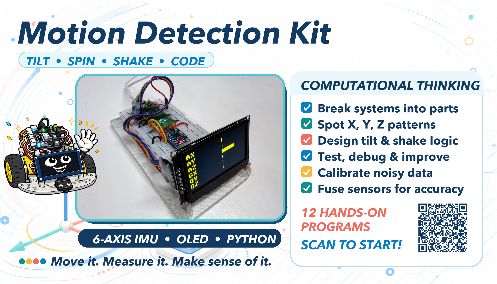
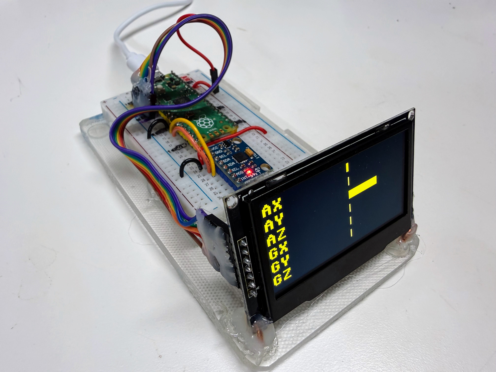
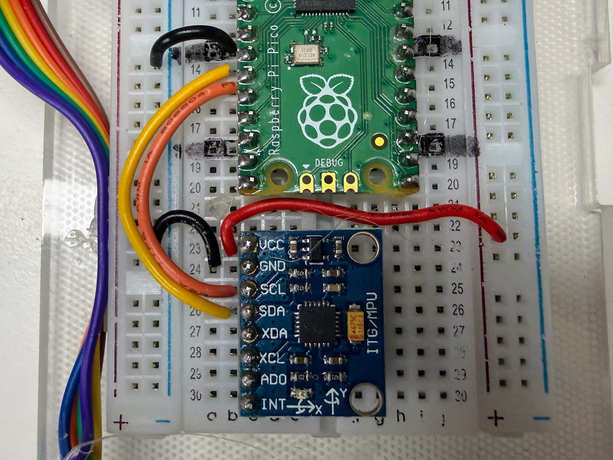
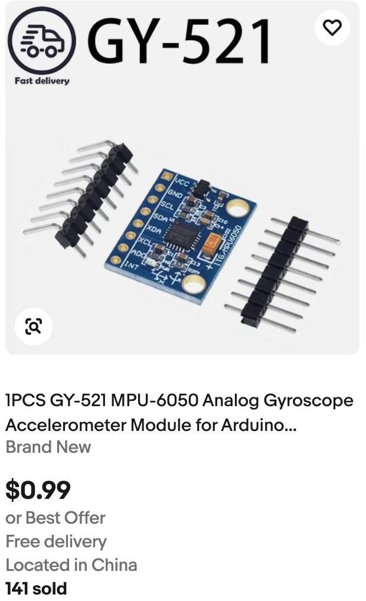
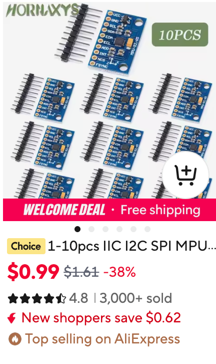

Motion Detection Explorer Kit

Learning about how to detect motion in a robot using a sensitive MEMS sensor.
Welcome, maker!
 Today we're not building a robot that drives — we're building one that
feels. Grab a Pico, a breadboard, an MPU6050 sensor, and a little OLED
screen, and let's find out how a robot knows which way is down!
Today we're not building a robot that drives — we're building one that
feels. Grab a Pico, a breadboard, an MPU6050 sensor, and a little OLED
screen, and let's find out how a robot knows which way is down!
This kit is not a full robot. There are no wheels and no motors. It is a small, standalone learning bench: a Raspberry Pi Pico, a breadboard, some jumper wires, an MPU6050 sensor, and an OLED display. Its only job is to teach one thing well — how an IMU sensor works, and how MicroPython code reads, displays, and calibrates it. Once you understand this kit, you'll be ready to bolt the same sensor onto a real robot chassis.
What Is an IMU?
IMU stands for Inertial Measurement Unit. You'll also see the same kind of chip called an MPU, short for Motion Processing Unit — that's where the "MPU" in "MPU6050" comes from. Both names mean the same kind of device: a chip that senses its own movement.
Every sensor you've used so far in this course answers the question "what's around me?" A time-of-flight sensor measures distance to a wall. A line sensor detects a dark stripe on the floor. An IMU asks a completely different question: "what am I doing right now?"
- Am I tipping forward or backward?
- Am I spinning?
- Did something just hit me?
- Which way is "up"?
Think about your own inner ear. Close your eyes on a spinning office chair and you can still feel that you're turning. You don't need to see it. That sense — motion and balance, felt from the inside — is exactly what an IMU gives a robot. The MPU6050 packs two sensors into one tiny chip to do this:
| Sensor | What it measures | Units |
|---|---|---|
| Accelerometer | Acceleration along the X, Y, and Z axes — including gravity | g (1g = Earth's gravity) |
| Gyroscope | How fast the sensor is rotating around each axis | degrees per second (deg/s) |
That combination — three axes of acceleration plus three axes of rotation — is why the MPU6050 is called a 6-DOF sensor: six degrees of freedom.
Why does this matter in robotics? A robot with an IMU can tell if it just got picked up, tipped over, or bumped into something — without waiting for a distance sensor to notice. It can keep its balance. It can estimate which way it's facing even between GPS updates or camera frames. Self-driving cars, drones, game controllers, and phones all use the exact same idea you're about to wire up on a breadboard.
How MEMS Technology Makes This Possible
A chip this small and this cheap — an MPU6050 breakout costs only a few dollars — can measure motion because of MEMS, or Micro-Electro- Mechanical Systems. MEMS means tiny mechanical parts, built at the same microscopic scale as computer chips, etched right onto a sliver of silicon.
Inside the MPU6050, next to the ordinary circuits, are structures smaller than the width of a human hair — with parts that actually move:
- The accelerometer contains a tiny mass held in place by microscopic springs. When the chip accelerates — or when gravity pulls on it — that mass shifts a tiny amount. Tiny comb-shaped electrodes on either side of the mass detect that shift as a change in capacitance (an electrical property related to how close two surfaces are). More shift means more acceleration.
- The gyroscope uses a different trick: a structure vibrating at a constant rate. When the whole chip rotates, that vibration bends slightly in a new direction — a physics effect called the Coriolis effect (the same effect that curves hurricane winds on a rotating Earth). The chip measures that bend and turns it into a rotation rate.
A mechanical machine you can't see
 Here's the wild part: there really is a microscopic mass swinging on
microscopic springs inside that little chip, right now. It's a real
machine — just one you'd need a microscope to see move.
Here's the wild part: there really is a microscopic mass swinging on
microscopic springs inside that little chip, right now. It's a real
machine — just one you'd need a microscope to see move.
MEMS is why this sensor is reliable enough to trust: it has no motors, no wear-prone bearings, and it's manufactured on the same automated production lines that make ordinary computer chips by the billion. That's also why your phone can tell when you rotate it, why game controllers know when you tilt them, and why a five-dollar breakout board can do something that used to require an expensive lab instrument.
What's in This Kit

This kit has five parts, all listed with pin details in
config.py:
| Part | Role |
|---|---|
| Raspberry Pi Pico | Runs the MicroPython code |
| Breadboard | Holds everything without soldering |
| Jumper wires | Connect the Pico, sensor, and display |
| MPU6050 breakout | The IMU itself |
| SSD1306/SSD1309 OLED (128×64) | Shows live sensor readings |
Wiring

The MPU6050 talks to the Pico over I2C, a two-wire protocol also used by the compass sensor in an earlier kit. The OLED uses a different protocol called SPI, which needs a few more wires but runs faster.
| MPU6050 pin | Pico pin | Purpose |
|---|---|---|
| VCC | 3.3V OUT | Power |
| GND | GND | Ground |
| SDA | GPIO10 | I2C data |
| SCL | GPIO11 | I2C clock |
| XDA / XCL | GPIO12 / GPIO13 | Not used in this kit |
| AD0 | GPIO14 | Address select (left unconnected = address 0x68) |
| INT | GPIO15 | Not used in this kit |
| OLED pin | Pico pin |
|---|---|
| SCL (clock) | GPIO2 |
| SDA (data) | GPIO3 |
| RES | GPIO4 |
| DC | GPIO5 |
| CS | GPIO6 |
GPIO10 and GPIO11 aren't interchangeable
 On the Pico's RP2040 chip, GPIO10 can only be I2C data (SDA) and
GPIO11 can only be I2C clock (SCL) — swap them and MicroPython
refuses to start with a
On the Pico's RP2040 chip, GPIO10 can only be I2C data (SDA) and
GPIO11 can only be I2C clock (SCL) — swap them and MicroPython
refuses to start with a bad SCL pin error. If your sensor still isn't
found after fixing that, double check the physical wires aren't crossed
the other way, landing SCL and SDA on the opposite pins from what the
chip expects.
Uploading the Code
Every program in this kit is a separate MicroPython file, numbered in the
order you'd naturally try them. To copy the whole kit — every program, the
shared config.py, the display driver, and any saved calibration — onto
the Pico in one step, run
upload-code.sh from a
terminal:
1 | |
Any single program can also be run directly from Thonny, or headlessly with:
1 | |
(Your port name may differ — check what shows up when you plug in the Pico.)
Step-by-Step Walkthrough of Every Program
Each program below builds on the one before it. Try them in order the first time through.
1. 01-probe.py — Is Anyone There?
Before writing any real program, we need to know the sensor is actually
there and talking. 01-probe.py scans the I2C bus and lists every address
that answers — like a roll call for chips:
1 2 | |
If the MPU6050 answers, it always shows up at address 0x68 (or 0x69 if
the AD0 pin is wired high). The probe then reads a register called
WHO_AM_I — every MPU6050 always reports back 0x68 here, no matter
what its I2C address is — as a second confirmation that the chip really is
an MPU6050 and not some other I2C device wired to the same pins.
2. 02-test-stream.py — Numbers Without a Screen
You don't need a display to know the sensor works. This program prints accelerometer and gyroscope readings straight to the console, six numbers per line:
1 2 | |
That one readfrom_mem call grabs all 14 bytes the sensor needs in a single
trip across the wire — accelerometer X/Y/Z, a temperature reading we don't
use yet, and gyroscope X/Y/Z. struct.unpack turns those raw bytes into six
signed numbers. Run this program and gently rotate the sensor — the numbers
should change smoothly and immediately.
3. 03-test-oled-hello.py — Hello, Screen
The classic first program for any display: put "Hello World!" on the screen. If you can read it, the SPI wiring and the OLED driver both work — completely separate from whether the MPU6050 works:
1 2 3 4 | |
4. 04-display-accel-bars.py — Feeling Gravity
Now we combine the sensor and the screen. This program draws three horizontal bars — X, Y, and Z acceleration — each growing left or right from a center line as you tilt or move the sensor. Hold it still and one bar should already be pushed out: that's gravity, always pulling at 1g on whichever axis points straight down.
5. 05-display-gyro-bars.py — Feeling Spin
Same three-bar layout, but this time driven by the gyroscope instead of the accelerometer. Spin the sensor and the bars swing out; let it rest and they snap back to center. This is a good way to feel the difference between the two sensors: the accelerometer reacts to tilt and gravity, the gyroscope reacts to how fast you're turning it.
6. 06-display-tilt-level.py — Bubble Level
This program turns the accelerometer into a digital version of the bubble level a carpenter uses. A dot drifts away from the center of a circle as you tilt the board, and the screen prints "LEVEL" once you get it flat:
1 2 | |
Under the hood, it turns the X and Y acceleration into roll and pitch
angles (in degrees) using atan2 — the same trigonometry a robot uses to
know it's about to tip over.
7. 07-display-six-bars.py — All Six at Once
This puts everything from programs 4 and 5 on one screen: six compact bars,
AX/AY/AZ/GX/GY/GZ, all updating live. It's the best "just pick it
up and play" demo in the kit — every possible motion moves at least one bar
— which is why it's the default screen in main.py (more on that below).
8. 08-calibrate-gyro.py — Teaching the Sensor to Sit Still
Set a resting gyroscope on a table and it should read exactly 0 deg/s on
every axis. In real hardware, it never quite does — manufacturing isn't
perfect, so every MPU6050 has a small constant bias, often a few deg/s,
even sitting perfectly still.
1 | |
This program averages five seconds of readings — you must hold the sensor
completely still and flat — to measure that bias for each axis, then
saves it to a file called calibration.json on the Pico. Other programs can
load that file later and subtract the bias out.
Calibration only works if you hold still
If the sensor moves — even a little — during those five seconds, real
motion gets averaged in as if it were bias. That produces a worse
correction than no correction at all. Set it down flat, let go, and
don't touch the table either.
9. 09-demo-gyro-drift.py — Why Calibration Matters
This program proves calibration is worth doing. It integrates the gyroscope's Z-axis reading over time into a running heading estimate — two ways at once. RAW uses the sensor's raw output; CAL subtracts the bias saved by program 8:
1 2 | |
Set the sensor down and don't touch it. Watch RAW slowly count upward (or
downward) even though nothing is moving — that's the uncorrected bias adding
up, one tiny slice of time (dt) at a time. CAL should drift far more
slowly. Neither one drifts to exactly zero forever, though — which is
exactly the problem the last section of this page explains how to solve.
10. 10-demo-complementary-filter.py — Two Sensors Are Better Than One
This program shows three different estimates of tilt (roll) side by side:
- GYRO — integrated from the gyroscope. Fast and smooth, but drifts.
- ACC — computed directly from gravity, using the accelerometer. Never drifts, but jumps around with every bump and vibration.
- FILT — a blend of both, called a complementary filter.
1 | |
That one line is the whole trick: trust the gyroscope almost completely
(FILTER_ALPHA = 0.98, or 98%) moment to moment, but constantly nudge the
result a small amount (2%) back toward whatever the accelerometer says. The
gyroscope smooths out the accelerometer's noise; the accelerometer keeps the
gyroscope from drifting forever. Tilt the sensor slowly, then jerk it
quickly, and watch how differently each row reacts.
11. 11-demo-shake-detector.py — Catching a Bump
At rest, no matter which way the sensor is pointed, its total acceleration (all three axes combined) always measures close to 1g — that's just gravity. A tap, drop, or shake briefly pushes that total number well above or below 1g:
1 2 | |
When that happens, the screen flashes SHAKE! in big inverted (white background, black text) letters. A real robot could use this exact same check to notice a collision — even one its distance sensor never saw coming.
12. 12-demo-swarm-compare.py — Two Robots, Two Opinions
This program draws a compass-style needle from a calibrated gyroscope heading — the same math as program 9's CAL line, just drawn as a dial instead of a number. It's meant to be copied onto two or more Picos and started at the same instant, pointing the same way.
Watch what happens: both needles agree at first, then slowly drift apart. Each board is only trusting its own slightly-imperfect gyroscope, with no way to check itself against the other. That's not a bug — it's a preview of a real problem every swarm of robots has to solve, which the last section of this page explains.
The Default Demo: main.py
One big program, five small ones
 This next program is the longest one in the kit. Don't let that worry
you — it's really just programs 4, 5, 6, 7, and 10 taking turns on the
same screen, plus one clever trick to switch between them.
This next program is the longest one in the kit. Don't let that worry
you — it's really just programs 4, 5, 6, 7, and 10 taking turns on the
same screen, plus one clever trick to switch between them.
Once you've tried the numbered programs, the kit's main.py — copied from
main-template.py — is
what runs automatically every time the Pico powers on. It's built to hand
someone the kit with zero instructions and still make sense.
Five Modes, No Calibration Required
main.py cycles through five display modes, each one a simplified version
of a program you've already met:
| Mode | Name | Same idea as |
|---|---|---|
| 0 (default) | Six Bars | 07-display-six-bars.py |
| 1 | Tilt Level | 06-display-tilt-level.py |
| 2 | Accel Bars | 04-display-accel-bars.py (X/Y/Z only) |
| 3 | Gyro Bars | 05-display-gyro-bars.py (X/Y/Z only) |
| 4 | Sensor Fusion | 10-demo-complementary-filter.py |
Mode 0 — Six Bars — is the very first thing you see, on purpose. It's the demo where any motion moves something on the screen, so a total stranger picking up the kit immediately understands "oh, this reacts to how I move it" within a couple of seconds, no reading required.
Notice main.py never loads calibration.json. That's deliberate: this is
the program a new user meets first, before they've ever run program 8. Mode
4's Sensor Fusion display still works fine without calibration — it just
carries a small, harmless bias in its GYRO row, which is invisible at a
glance and doesn't stop the demo from making its point.
How Shaking Changes the Mode
main.py reuses the exact shake-detection math from program 11 — total
acceleration more than 0.5g away from the resting 1g counts as a shake —
but instead of just flashing a message, a shake advances to the next
mode:
1 2 3 4 5 6 7 8 9 10 | |
That screen — white background, bold black text, the upcoming mode's name spelled out — is impossible to miss. After the last mode (Sensor Fusion), a shake wraps back around to Six Bars, so the demo never gets "stuck" at the end.
One detail makes this feel smooth instead of glitchy: MODE_COOLDOWN_MS.
For a second and a half after every mode change, new shakes are ignored.
Without it, a single real-world shake — which rarely lasts just one instant
— could trigger two or three mode changes in a row before you even let go of
the sensor.
Try it yourself: run main.py, watch the Six Bars mode react to every
movement, then give the board one firm shake and read the message before
the next mode appears.
From One Sensor to a Swarm: Adding a Magnetometer
Program 12 showed two boards' headings quietly drifting apart, each trusting only its own gyroscope. That's not just a demo quirk — it's a fundamental limit of this exact 6-DOF sensor, and understanding why points straight at how real robot swarms solve it.
Here's the core problem: the accelerometer can tell you which way is down (that's how program 6's Tilt Level works), but it cannot tell you which way is north. Spin the sensor flat on a table, staying perfectly level the whole time, and gravity still pulls straight down on the same axis — the accelerometer sees no change at all. The only sensor tracking that spin is the gyroscope, and the gyroscope only measures a rate of change that has to be added up over time — which means, as program 9 showed, it drifts.
A magnetometer solves this by sensing something the accelerometer can't: Earth's magnetic field. Just like a compass needle, it points toward magnetic north no matter how the sensor is spinning. Add a magnetometer to this kit's accelerometer and gyroscope, and you get a full 9-DOF sensor — nine degrees of freedom, three sensors, three axes each. That's exactly the L3GD20 gyroscope + LSM303D accelerometer/magnetometer combo used later in this course to build a real swarm.
The magnetometer isn't a free lunch, though. Motors, batteries, and nearby metal all distort magnetic fields, so every magnetometer needs its own hard-iron calibration — you can see this exact idea already at work in the compass kit, where rotating the sensor through a full circle measures and cancels out that local distortion. And a magnetometer reading alone is noisy and slow, in the same way this kit's accelerometer alone was noisy in program 10 — so a 9-DOF sensor gets fused together with the same complementary filter idea from program 10, just extended to blend three sensors into one stable heading instead of two.
Here's where it becomes a swarm technique rather than a single-robot one. Program 12 already showed that two boards, left alone, disagree more and more over time. A magnetometer fixes that for one robot by giving it its own absolute compass reference. But a whole swarm needs every robot to agree with each other, not just with a compass — and cheap magnetometers still have small errors that differ from one to the next. The fix used later in this course is for one robot to broadcast its own fused heading over WiFi, using a networking pattern called UDP broadcast, so every other robot in the swarm can steer to match it — the same way you might follow a friend's pointed finger instead of trying to work out north yourself. No robot has to be perfectly accurate on its own. They just all have to agree.
That's the real destination this kit has been building toward: everything you practiced here — reading raw sensor values, calibrating out bias, and blending two disagreeing sensors into one trustworthy answer — is precisely what it takes to keep an entire swarm of robots pointed the same direction.
You just learned how robots feel motion!
 Look at what you built: you probed a sensor over I2C, streamed live
motion data, drew five different OLED visualizations, measured a real
gyroscope bias, and fused two sensors into one steady answer. That's the
same toolkit real robotics engineers use — you just used it on a
breadboard instead of a spacecraft!
Look at what you built: you probed a sensor over I2C, streamed live
motion data, drew five different OLED visualizations, measured a real
gyroscope bias, and fused two sensors into one steady answer. That's the
same toolkit real robotics engineers use — you just used it on a
breadboard instead of a spacecraft!
References
MPU-6000/MPU-6050 Product Specification - InvenSense/TDK. The official datasheet: register map, electrical characteristics, and pin configuration for the 6-DOF sensor used in this kit.
Purchasing Your Own Sensors
There are two reasons we selected the MPU6050 in the GY-521 package. The first is that is is low cost (about $1 if you are a clever shopper) and the second reason is that because it is popular and therefore also well documented. The initial release of the MPU6050 was back in November of 2010. Since then it has been use in many low-cost robotics projects. When the MPU6050 is combined with a magnetic sensor such as the HMC5883L magnetosensor then robots can know and communicate their orientation.
eBay
MPU6050 search on eBay - typical breakout boards (often labeled GY-521) sorted by price, low to high. For example, this part on eBay was listed for .99 cents with free shipping.

AliExpress
MPU6050 search on AliExpress - the same breakout boards, usually cheaper in small bulk quantities but with longer shipping times.
